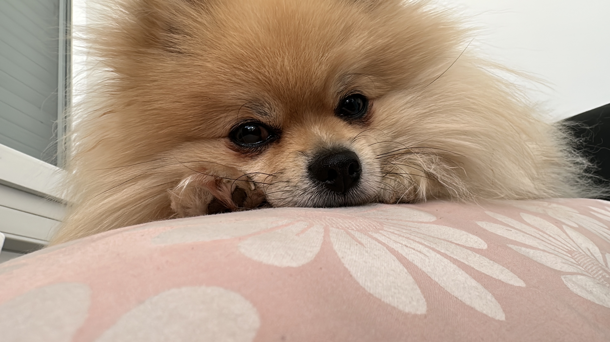

Guerra con las pecas
Cuando era niñita era la crespa, pecosa, gordita y con frenillos, odiaba mis pecas porque me hacían muchas bromas.
Hola, soy Cyndi. En esta página te contaré un poco sobre mi vida y mis pasiones. Me encanta el cine, el arte, la ciencia y los perros.
Disfruto mucho del cine especialmente del cine documental. Siempre estoy buscando nuevas películas, me apasionan los documentales de casos policiales.
Me gusta mucho pintar y siempre me ha llamado la atención las ciencias naturales y la matemática, aunque difíciles las considero fascinantes.
Creo que los perros son los seres más hermosos que pisan la tierra, disfruto mucho de su compañía y me encanta regalonear a mi perrita. Me encanta experimentar con recetas y preparar comidas deliciosas, sanas y baratas para mis "firulais".
Cuando era niñita era la crespa, pecosa, gordita y con frenillos, odiaba mis pecas porque me hacían muchas bromas.
Usé de todo para sacar mis pecas, hice todo tipo de dietas, pero al final, me sacaron los frenillos, no dejé de comer sino que me puse a entrenar y las pecas volvieron en toda su majestad. Así que las he aceptado, y he aprendido a cocinar alimentos deliciosos que puedes usar mientras haces fitness. Aquí te comparto algunas recetas.
Saber más acerca de recetas fitness para chuparse los dedos